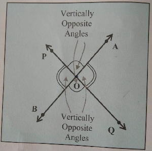

Day 12
Hi All, Please find the questions for the day from Pierre.
- In Jules’s birthday party, Oliver got 1/14th of the slice of pizza while Eric got 7/100th of the slice of pizza. Who got the bigger slice?

- Sum of two rational numbers is 4/5. If one of the number is 2/15, find the other number.
- Fill in the blanks:
- Numerical value of an integer without having any sign(+ve or -ve ) is callled __________ value.
- In the BODMAS rule Of means _______________.
- State TRUE or FALSE:
- A line is a collection of infinite points and can be extended endlessly in both the directions.
- Two lines in the same plane will either intersect at a point or never meet.
- Any two angles, that are formed by two intersecting lines and which are not adjacent, are called as vertically opposite angles as shown. 
- Find the value of x, y, z angles using the vertically opposite angles concept.
- Simplify: 2.127 - [ 15 - 4.3 x { 1.8 + ((4.87-3.47) / 16 ) } ]
- Caroline purchased a water jug 34/5 litres. If she buys another jug which is 22/3 times bigger than the previous one, how much water the larger one will hold?
Thank you! See you tomorrow.